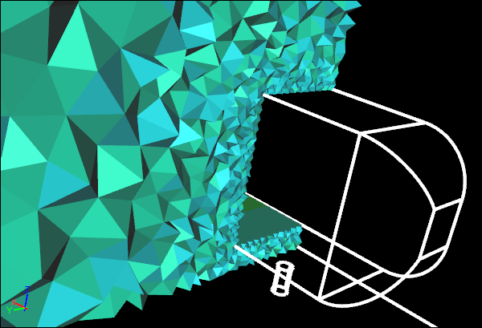

Meshing in a Single, Integrated Simulation Environment
Meshing in a single, integrated simulation environment (e.g., Caedium) for Computational Fluid Dynamics (CFD) is different, in a good way, from meshing in a dedicated mesh or post-processing tool. An integrated CFD simulation environment has the standard meshing tools, but in addition upstream you have a full geometry engine to create and modify geometry as needed, and downstream you can use the same meshing tools for visualization, such as seeds for streamlines and surfaces for results interpolation. You are not forced into a linear progression through the CFD simulation process, because often it requires multiple visits backwards and forwards (non-linear) through the tool chain to get to a final result. Also the visualization of mesh metrics (e.g., surface mesh quality) is identical to general flow field visualization (e.g., pressure), which minimizes the number of concepts you need to learn.
 Single, Integrated CFD Simulation Environment
Single, Integrated CFD Simulation Environment
Surface Meshing
Note that in the initial phase of the CFD simulation process we first focus on the surface mesh as it is relatively quick to generate. Interactive changes to the geometry and mesh constraints can be assessed in timely manner, whereas if we also had to generate a volume mesh with each change it would be a slow tedious process.
The first thing to determine after importing or creating your flow volume (assuming you have taken care to ensure that it is a watertight manifold solid) is to see if the geometry is good enough for a flow simulation, the easiest way to do this is to surface mesh the entire model. Then visualize surface mesh quality metrics (e.g., edge-length ratio of actual to ideal elements) with the aim of identifying low-quality elements.
Initial Surface MeshConfirms valid surface geometry
In Caedium the meshing process is driven by the request for results, so visualizing mesh quality metrics will also automatically create the mesh. The regions of low-quality elements will often cluster around geometry problems such as slivers. At this point you can modify the geometry to remove such features and have the mesh regenerated on demand.
Refined Surface MeshImproved surface resolution due to mesh constraints
Next you want to ensure you have adequate resolution of critical geometry and important flow regions using mesh sizing (Accuracy tool in Caedium) constraints. Applying these constraints and observing their effect on the surface mesh is a time efficient way to progress towards your complete CFD simulation.
Volume Meshing
Typically creating a good volume mesh relies on a good surface mesh, hence the focus is first on the surface mesh. Also volume mesh creation can take a significant length of time to complete, so again making sure the surface mesh is good serves as a firm foundation for a good volume mesh without wasting precious time.
Volume MeshSlice showing individual volume elements
The volume meshing process in Caedium is automatically triggered by visualizing a volume mesh quality metric (e.g., volume-ratio of actual element to ideal element). As with the surface mesh metric visualization, the goal is to identify the worst elements. If those low-quality elements are clustered in a certain region (e.g., between surfaces in close proximity) then it is an indication that you need to reduce the element size locally using mesh size constraints. If the lowest-quality elements are relatively few and randomly dispersed, then usually you can proceed to the next phase of the CFD simulation process.
Mesh Control Away From Flow Volume Surfaces
Occasionally you need to control the mesh sizing away from surfaces that define the flow volume. In this case you can create geometry that is independent of the flow volume in these regions of interest , e.g., in the wake behind a car.
Surface Mesh with Separate Volume Mesh Constraint
You can then assign meshing constraints to the newly created geometry that targets the flow volume mesh.
 Volume Mesh with Separate Volume Mesh Constraint
Volume Mesh with Separate Volume Mesh Constraint
Streamlines
Streamlines are massless particle tracks that originate at points (seeds) and trace a path through a fluid while maintaining a trajectory parallel to the local velocity direction. In Caedium you simply mesh geometry or use existing mesh on geometry where the mesh nodes serve as seeds.
Streamlines Created From Separate Face
This approach eliminates the need for special post-processing artifacts for streamlines that are typically found in dedicated post-processing tools. Note that with an integrated CFD simulation environment you can re-use familiar concepts, in this case meshing, for ease of learning and efficiency of use.
Cutting Plane Contours
Another requirement for results visualization is to provide insight within a flow domain of the flow field (e.g., velocity magnitude) on an arbitrarily positioned surface, often referred to as a cutting plane. Caedium provides this feature by using a mesh on a geometry surface to interpolate results from the flow field for visualization as contours or vectors. This simple approach again makes use of the integrated CFD simulation environment to create geometry and control the mesh on it - concepts you are already familiar with.
Contours Created on Separate Face
Feedback
Questions? Ideas? Problems?

Recent blog posts
- CFD Simulates Distant Past
- Background on the Caedium v6.0 Release
- Long-Necked Dinosaurs Succumb To CFD
- CFD Provides Insight Into Mystery Fossils
- Wind Turbine Design According to Insects
- Runners Discover Drafting
- Wind Tunnel and CFD Reveal Best Cycling Tuck
- Active Aerodynamics on the Lamborghini Huracán Performante
- Fluidic Logic
- Stonehenge Vortex Revealed as April Fools' Day Distortion Field
 Get our Blog feed
Get our Blog feed